Scale notes
The seven notes that fit this key. Numbers are scale degrees.
Tonic listens to music and tells you its key and scale, the notes in it, and the chords that fit.
How it works
Tap ListenPlay a song or sing near your phone. A first read comes in about 6 seconds; give it 20 for modes like Dorian.
Or pick a fileTap File to analyze a song saved on your device.
Read the resultKey, scale, notes, chords and the closest alternatives. Tap a chord to hear it.
Audio stays on this device
To install on iPhone: tap Share, then Add to Home Screen.
00:00:00

Closest scales
C major
Relative · A minor
The seven notes that fit this key. Numbers are scale degrees.
Tap a chord to hear it. Roman numerals show its place in the key.
Tonic measures how much of each of the 12 notes it hears, with extra weight on the bass line, and compares that with templates for every major and minor key (Krumhansl–Kessler and Temperley profiles). After about 20 seconds it also tests the Dorian, Mixolydian, Lydian and Phrygian modes, and checks minor keys for a raised 7th. It corrects for songs that aren't tuned to A = 440 Hz.
When it hears a single voice, it follows the sung notes instead of the whole sound, so a voice's overtones don't pull the answer toward the wrong key. The result only changes when another key clearly wins for several seconds.
Audio is analyzed on this device and never uploaded.
Update available
Refresh to get the newest version of Tonic.